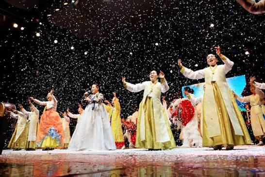

어떤 노래인가요?
정선을 대표하는 민요예요. 기쁘고 그리운 마음, 살아가는 이야기를 노래로 전해요.
정선은 산과 강이 아름답고, 아리랑과 옛이야기가 오늘까지 살아 있는 곳이에요. 궁금한 문을 하나씩 열어 볼까요?
정선 사람들이 살아가며 느낀 마음과 이야기가 노래가 되었어요.
정선을 대표하는 민요예요. 기쁘고 그리운 마음, 살아가는 이야기를 노래로 전해요.
두 물길이 만나는 아우라지와 정선의 마을, 정선아리랑제에서 만날 수 있어요.
옛사람들의 마음과 정선의 생활 모습을 오늘의 우리에게 이어 주기 때문이에요.

노래가 시작되면 마음도 둥실 ♪대표곡 버튼을 누르면 긴아리랑이 처음부터 재생돼요.
정선군 공식 자료실에서 제공하는 음원을 사용했어요.
책을 읽고, 궁금한 것을 찾고, 새로운 친구와 문화를 만나는 열린 공간이에요.
읽고 싶은 책을 검색하고 자료실에서 찾아봐요.
신착자료와 사서 선생님의 추천도서를 살펴봐요.
온라인 전자도서관에서 책과 잡지를 만나요.
독서·문화 활동과 동아리 프로그램에 참여해요.
산과 강이 만든 풍경, 이웃과 함께한 옛 생활, 신나는 체험을 카드로 만나 봐요.
산과 강 사이에서 시작된 정선의 하루를 동화책처럼 넘겨 읽어 봐요.